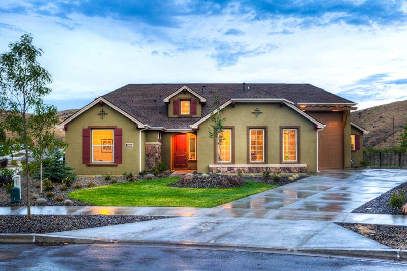

Qu’est-ce que la VEFA et comment fonctionne-t-elle ?
La VEFA (Vente en État Futur d’Achèvement) est le contrat juridique par lequel un acheteur acquiert un logement qui n’existe pas encore ou qui est en cours de construction. C’est la forme la plus répandue d’achat dans l’immobilier neuf : vous signez un contrat de réservation, versez un dépôt de garantie, puis attendez la livraison du bien pour en prendre possession.
Le processus se déroule en plusieurs étapes clés :
- 1. Contrat de réservation : signature chez le promoteur avec versement d’un dépôt (1 à 5% du prix)
- 2. Acte de vente notarié : signature définitive chez le notaire dans les 3 mois
- 3. Appels de fonds : paiements échelonnés selon l’avancement des travaux
- 4. Livraison : remise des clés avec état des lieux et consignation des réserves
Quelles protections l’acheteur VEFA bénéficie-t-il en 2026 ?
La VEFA est l’un des actes d’achat les mieux encadrés juridiquement en France. Plusieurs protections légales s’appliquent automatiquement :
La garantie financière d’achèvement (GFA)
Obligatoire depuis 1990, la GFA garantit que votre logement sera livré même si le promoteur fait faillite. Un établissement bancaire ou un assureur s’engage à financer l’achèvement des travaux si nécessaire. C’est une protection fondamentale qui sécurise votre investissement.
Le délai de rétractation
Après signature du contrat de réservation, vous disposez d’un délai de rétractation de 10 jours pour changer d’avis sans pénalité et récupérer intégralement votre dépôt de garantie.
Les conditions suspensives
L’acte de vente en VEFA est automatiquement soumis à la condition suspensive d’obtention du prêt immobilier. Si votre financement est refusé, le contrat est annulé et votre dépôt vous est restitué dans les 21 jours.
L’échéancier de paiement en VEFA : comment se déroulent les appels de fonds ?
En VEFA, vous ne payez pas la totalité du prix à la signature mais au fur et à mesure de l’avancement du chantier, selon un calendrier réglementé :
- À la signature chez le notaire : 35% maximum du prix de vente
- À l’achèvement des fondations : jusqu’à 35% (soit 70% cumulés max)
- À la mise hors d’eau (toit posé) : jusqu’à 10% (soit 80% cumulés max)
- À l’achèvement des travaux : jusqu’à 15% (soit 95% cumulés max)
- À la livraison : les 5% restants (consignables en cas de réserves)
Ce calendrier protège l’acheteur : vous ne payez qu’au rythme réel de la construction. Si les travaux prennent du retard, vous n’avancez pas les fonds prématurément. Les délais de livraison sont également encadrés : un retard injustifié peut ouvrir droit à des pénalités contractuelles.

Conseils Solution Neuf pour bien acheter en VEFA en 2026
Fort de notre expérience dans l’accompagnement d’acheteurs en VEFA, voici les points de vigilance essentiels à vérifier avant de signer :
- ✅ Vérifiez le permis de construire : il doit être purgé de tout recours avant signature de l’acte notarié
- ✅ Lisez attentivement le TMA (Travaux Modificatifs Acquéreurs) : les personnalisations ont un coût et un délai
- ✅ Contrôlez la notice descriptive : elle engage le promoteur sur tous les matériaux et équipements
- ✅ Anticipez la date de livraison : prévoyez un logement temporaire si vous vendez votre bien actuel
- ✅ Mandatez un expert lors de la livraison : un œil professionnel détecte les défauts que vous pourriez manquer
Chez Solution Neuf, nous vous accompagnons de la sélection du programme jusqu’à la remise des clés. Notre réseau de promoteurs partenaires garantit des projets sérieux, avec des historiques de livraison fiables et un service client de qualité.
Trouver mon programme VEFA idéal →
Publié le 10/04/2026 · Mis à jour le 10/04/2026